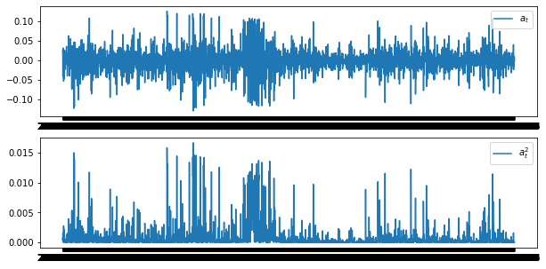
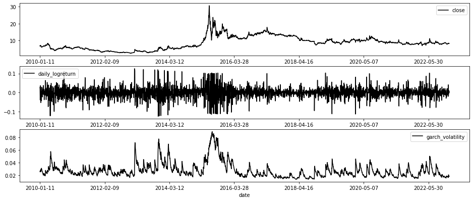

GARCH模型实现#
1. 读取数据#
使用开源API工具，可以获取指定日期内的上证指数的价格数据。
import tushare as ts
raw_data = ts.get_k_data(code='000096', start='2010-01-01', end='2023-01-19')
raw_data.index=raw_data['date']
本接口即将停止更新，请尽快使用Pro版接口：https://tushare.pro/document/2
/Users/xuzhuying/opt/anaconda3/lib/python3.9/site-packages/tushare/stock/trading.py:706: FutureWarning: The frame.append method is deprecated and will be removed from pandas in a future version. Use pandas.concat instead.
data = data.append(_get_k_data(url, dataflag,
/Users/xuzhuying/opt/anaconda3/lib/python3.9/site-packages/tushare/stock/trading.py:706: FutureWarning: The frame.append method is deprecated and will be removed from pandas in a future version. Use pandas.concat instead.
data = data.append(_get_k_data(url, dataflag,
/Users/xuzhuying/opt/anaconda3/lib/python3.9/site-packages/tushare/stock/trading.py:706: FutureWarning: The frame.append method is deprecated and will be removed from pandas in a future version. Use pandas.concat instead.
data = data.append(_get_k_data(url, dataflag,
/Users/xuzhuying/opt/anaconda3/lib/python3.9/site-packages/tushare/stock/trading.py:706: FutureWarning: The frame.append method is deprecated and will be removed from pandas in a future version. Use pandas.concat instead.
data = data.append(_get_k_data(url, dataflag,
/Users/xuzhuying/opt/anaconda3/lib/python3.9/site-packages/tushare/stock/trading.py:706: FutureWarning: The frame.append method is deprecated and will be removed from pandas in a future version. Use pandas.concat instead.
data = data.append(_get_k_data(url, dataflag,
/Users/xuzhuying/opt/anaconda3/lib/python3.9/site-packages/tushare/stock/trading.py:706: FutureWarning: The frame.append method is deprecated and will be removed from pandas in a future version. Use pandas.concat instead.
data = data.append(_get_k_data(url, dataflag,
/Users/xuzhuying/opt/anaconda3/lib/python3.9/site-packages/tushare/stock/trading.py:706: FutureWarning: The frame.append method is deprecated and will be removed from pandas in a future version. Use pandas.concat instead.
data = data.append(_get_k_data(url, dataflag,
raw_data['close'].plot(figsize=(10,3), legend=True, color='red')
<AxesSubplot:xlabel='date'>
2.日收益率序列#
raw_data['close'].shift(1)
date
2010-01-04 NaN
2010-01-05 6.74
2010-01-06 6.82
2010-01-07 6.82
2010-01-08 6.67
...
2023-01-13 8.22
2023-01-16 8.19
2023-01-17 8.21
2023-01-18 8.30
2023-01-19 8.28
Name: close, Length: 3166, dtype: float64
import pandas as pd
data = pd.DataFrame()
data['close'] = raw_data['close']
# 日收益率
data['yesterday_close'] = raw_data['close'].shift(1)
data['daily_return'] = (data['close']-data['yesterday_close'])/data['yesterday_close']
# 日对数收益率
import numpy as np
data['daily_logreturn']=(data['close']/data['yesterday_close']).apply(np.log)
data['daily_logreturn'].plot(figsize=(10,3), legend=True, color='red')
<AxesSubplot:xlabel='date'>
# 周收益率
data['lastweek_close'] = raw_data['close'].shift(5)
data['week_return'] = (data['close']-data['lastweek_close'])/data['lastweek_close']
# 月收益率
# 均值 标准差 方差 最大值 最小值
junzhi=np.mean(data['close'])
print('均值：', junzhi)
均值： 8.561502689022467
biaozhuncha=np.std(data['close'])
print('标准差：', biaozhuncha)
标准差： 3.8607097417000094
fangcha=np.var(data['close'])
print('方差：', fangcha)
方差： 14.905079709657352
maximum=np.max(data['close'])
print('最大数据是：', maximum)
最大数据是： 30.61
minimum=np.min(data['close'])
print('最小数据是：', minimum)
最小数据是： 2.44
data=data.dropna()
data.head(10)
| close | yesterday_close | daily_return | daily_logreturn | lastweek_close | week_return | |
|---|---|---|---|---|---|---|
| date | ||||||
| 2010-01-11 | 6.84 | 6.66 | 0.027027 | 0.026668 | 6.74 | 0.014837 |
| 2010-01-12 | 6.98 | 6.84 | 0.020468 | 0.020261 | 6.82 | 0.023460 |
| 2010-01-13 | 6.71 | 6.98 | -0.038682 | -0.039450 | 6.82 | -0.016129 |
| 2010-01-14 | 6.84 | 6.71 | 0.019374 | 0.019189 | 6.67 | 0.025487 |
| 2010-01-15 | 7.09 | 6.84 | 0.036550 | 0.035898 | 6.66 | 0.064565 |
| 2010-01-18 | 7.16 | 7.09 | 0.009873 | 0.009825 | 6.84 | 0.046784 |
| 2010-01-19 | 7.15 | 7.16 | -0.001397 | -0.001398 | 6.98 | 0.024355 |
| 2010-01-20 | 6.78 | 7.15 | -0.051748 | -0.053135 | 6.71 | 0.010432 |
| 2010-01-21 | 6.82 | 6.78 | 0.005900 | 0.005882 | 6.84 | -0.002924 |
| 2010-01-22 | 6.53 | 6.82 | -0.042522 | -0.043453 | 7.09 | -0.078984 |
下面对收盘价和收益率进行绘图
import matplotlib.pyplot as plt
fig, ax = plt.subplots(2,1)
data[['close']].plot(figsize=(16,4), ax=ax[0])
data[['week_return']].plot(figsize=(16,4), ax=ax[1], color='green')
<AxesSubplot:xlabel='date'>
# 数据处理
data = data.dropna()
3. 平稳性检验#
import statsmodels.tsa.stattools as st
adf_t, pvalue, usedlag, nobs, critical_values, icbest = \
st.adfuller(data['daily_logreturn'])
print('adf的t统计量：', adf_t)
print('p值：', pvalue)
print('滞后阶数：', usedlag)
print('样本数：', nobs)
print('临界值：', critical_values)
adf的t统计量： -13.396419249676372
p值： 4.657628322015134e-25
滞后阶数： 22
样本数： 3138
临界值： {'1%': -3.432435614191757, '5%': -2.862461495644756, '10%': -2.5672605338292387}
4. 正态性检验#
from statsmodels.stats.stattools import jarque_bera
_,pvalue,_, _=jarque_bera(data['daily_logreturn'].values)
if pvalue > 0.05:
print('pvalue:', pvalue, '收益率序列服从正态分布。')
else:
print('pvalue:', pvalue, '收益率序列并不服从正态分布。')
pvalue: 0.0 收益率序列并不服从正态分布。
5.ARCH效应检验#
5.1 均值方程的建立#
首先检验平稳性，是否需要差分。
原假设\(H_0\):序列为非平稳的； 备择假设\(H_1\):序列是平稳的。
import pandas as pd
raw_data = ts.get_k_data(code='000096', start='2010-01-01', end='2023-01-19')
data.head()
本接口即将停止更新，请尽快使用Pro版接口：https://tushare.pro/document/2
/Users/xuzhuying/opt/anaconda3/lib/python3.9/site-packages/tushare/stock/trading.py:706: FutureWarning: The frame.append method is deprecated and will be removed from pandas in a future version. Use pandas.concat instead.
data = data.append(_get_k_data(url, dataflag,
/Users/xuzhuying/opt/anaconda3/lib/python3.9/site-packages/tushare/stock/trading.py:706: FutureWarning: The frame.append method is deprecated and will be removed from pandas in a future version. Use pandas.concat instead.
data = data.append(_get_k_data(url, dataflag,
/Users/xuzhuying/opt/anaconda3/lib/python3.9/site-packages/tushare/stock/trading.py:706: FutureWarning: The frame.append method is deprecated and will be removed from pandas in a future version. Use pandas.concat instead.
data = data.append(_get_k_data(url, dataflag,
/Users/xuzhuying/opt/anaconda3/lib/python3.9/site-packages/tushare/stock/trading.py:706: FutureWarning: The frame.append method is deprecated and will be removed from pandas in a future version. Use pandas.concat instead.
data = data.append(_get_k_data(url, dataflag,
/Users/xuzhuying/opt/anaconda3/lib/python3.9/site-packages/tushare/stock/trading.py:706: FutureWarning: The frame.append method is deprecated and will be removed from pandas in a future version. Use pandas.concat instead.
data = data.append(_get_k_data(url, dataflag,
/Users/xuzhuying/opt/anaconda3/lib/python3.9/site-packages/tushare/stock/trading.py:706: FutureWarning: The frame.append method is deprecated and will be removed from pandas in a future version. Use pandas.concat instead.
data = data.append(_get_k_data(url, dataflag,
/Users/xuzhuying/opt/anaconda3/lib/python3.9/site-packages/tushare/stock/trading.py:706: FutureWarning: The frame.append method is deprecated and will be removed from pandas in a future version. Use pandas.concat instead.
data = data.append(_get_k_data(url, dataflag,
| close | yesterday_close | daily_return | daily_logreturn | lastweek_close | week_return | |
|---|---|---|---|---|---|---|
| date | ||||||
| 2010-01-11 | 6.84 | 6.66 | 0.027027 | 0.026668 | 6.74 | 0.014837 |
| 2010-01-12 | 6.98 | 6.84 | 0.020468 | 0.020261 | 6.82 | 0.023460 |
| 2010-01-13 | 6.71 | 6.98 | -0.038682 | -0.039450 | 6.82 | -0.016129 |
| 2010-01-14 | 6.84 | 6.71 | 0.019374 | 0.019189 | 6.67 | 0.025487 |
| 2010-01-15 | 7.09 | 6.84 | 0.036550 | 0.035898 | 6.66 | 0.064565 |
import statsmodels.api as sm
res = sm.tsa.stattools.adfuller(data['daily_logreturn'])
print('p-value', res[1])
p-value 4.657628322015134e-25
import matplotlib.pyplot as plt
fig = plt.figure(figsize=(10,3))
ax1 = fig.add_subplot(111)
fig = sm.graphics.tsa.plot_pacf(data['daily_logreturn'], lags=20, ax=ax1)
plt.show()
/Users/xuzhuying/opt/anaconda3/lib/python3.9/site-packages/statsmodels/graphics/tsaplots.py:348: FutureWarning: The default method 'yw' can produce PACF values outside of the [-1,1] interval. After 0.13, the default will change tounadjusted Yule-Walker ('ywm'). You can use this method now by setting method='ywm'.
warnings.warn(
于是我们建立AR(3)模型，即均值方程：
order = (3, 0, 0)
model = sm.tsa.ARIMA(data['daily_logreturn'], order=order).fit()
/Users/xuzhuying/opt/anaconda3/lib/python3.9/site-packages/statsmodels/tsa/base/tsa_model.py:471: ValueWarning: A date index has been provided, but it has no associated frequency information and so will be ignored when e.g. forecasting.
self._init_dates(dates, freq)
/Users/xuzhuying/opt/anaconda3/lib/python3.9/site-packages/statsmodels/tsa/base/tsa_model.py:471: ValueWarning: A date index has been provided, but it has no associated frequency information and so will be ignored when e.g. forecasting.
self._init_dates(dates, freq)
/Users/xuzhuying/opt/anaconda3/lib/python3.9/site-packages/statsmodels/tsa/base/tsa_model.py:471: ValueWarning: A date index has been provided, but it has no associated frequency information and so will be ignored when e.g. forecasting.
self._init_dates(dates, freq)
5.2 ARCH效应的检验#
利用前面的金融时间序列中的混成检验（Ljung-Box），检验序列\({a_t^2}\)的相关性，来判断是否具有ARCH效应。
a_t = data['daily_logreturn'] - model.fittedvalues
import numpy as np
a_t_2 = np.square(a_t)
plt.figure(figsize=(10,5))
plt.subplot(211)
plt.plot(a_t, label='$a_t$')
plt.legend(loc=1)
plt.subplot(212)
plt.plot(a_t_2, label='$a_t^2$')
plt.legend(loc=1)
plt.show()

然后对\({a_t^2}\)进行混成检验。
原假设\(H_0\):序列没有相关性；备择假设\(H_1\)：序列具有相关性。
m = 25
acf, q, p = sm.tsa.acf(a_t_2, nlags=m, qstat=True)
out = np.c_[range(1, 26), acf[1:], q, p]
output = pd.DataFrame(out, columns=['lag', "ACF", 'Q', 'P-value'])
output = output.set_index('lag')
output
| ACF | Q | P-value | |
|---|---|---|---|
| lag | |||
| 1.0 | 0.357443 | 404.251214 | 6.538993e-90 |
| 2.0 | 0.322940 | 734.329987 | 3.485535e-160 |
| 3.0 | 0.300991 | 1021.155224 | 4.633093e-221 |
| 4.0 | 0.287392 | 1282.730906 | 1.846312e-276 |
| 5.0 | 0.279057 | 1529.433103 | 0.000000e+00 |
| 6.0 | 0.246429 | 1721.878755 | 0.000000e+00 |
| 7.0 | 0.198110 | 1846.294718 | 0.000000e+00 |
| 8.0 | 0.242262 | 2032.404642 | 0.000000e+00 |
| 9.0 | 0.238201 | 2212.384468 | 0.000000e+00 |
| 10.0 | 0.242941 | 2399.658602 | 0.000000e+00 |
| 11.0 | 0.192191 | 2516.899390 | 0.000000e+00 |
| 12.0 | 0.228752 | 2683.041473 | 0.000000e+00 |
| 13.0 | 0.217099 | 2832.735139 | 0.000000e+00 |
| 14.0 | 0.212569 | 2976.293391 | 0.000000e+00 |
| 15.0 | 0.210789 | 3117.502105 | 0.000000e+00 |
| 16.0 | 0.165087 | 3204.143842 | 0.000000e+00 |
| 17.0 | 0.199363 | 3330.538892 | 0.000000e+00 |
| 18.0 | 0.196744 | 3453.673747 | 0.000000e+00 |
| 19.0 | 0.185673 | 3563.375576 | 0.000000e+00 |
| 20.0 | 0.169150 | 3654.451120 | 0.000000e+00 |
| 21.0 | 0.205561 | 3788.998423 | 0.000000e+00 |
| 22.0 | 0.206763 | 3925.167182 | 0.000000e+00 |
| 23.0 | 0.198961 | 4051.293527 | 0.000000e+00 |
| 24.0 | 0.212114 | 4194.693575 | 0.000000e+00 |
| 25.0 | 0.186611 | 4305.718606 | 0.000000e+00 |
p-value小于显著性水平5%， 我们拒绝原假设，即认为序列具有相关性。因此具有ARCH效应。
6. 定阶#
import statsmodels.tsa.ar_model as ar_model
import numpy as np
model = ar_model.AutoReg(data['daily_logreturn'], lags=6)
result = model.fit()
result.summary()
/Users/xuzhuying/opt/anaconda3/lib/python3.9/site-packages/statsmodels/tsa/base/tsa_model.py:471: ValueWarning: A date index has been provided, but it has no associated frequency information and so will be ignored when e.g. forecasting.
self._init_dates(dates, freq)
| Dep. Variable: | daily_logreturn | No. Observations: | 3161 |
|---|---|---|---|
| Model: | AutoReg(6) | Log Likelihood | 6630.282 |
| Method: | Conditional MLE | S.D. of innovations | 0.030 |
| Date: | Wed, 22 Mar 2023 | AIC | -13244.563 |
| Time: | 15:06:54 | BIC | -13196.109 |
| Sample: | 6 | HQIC | -13227.179 |
| 3161 |
| coef | std err | z | P>|z| | [0.025 | 0.975] | |
|---|---|---|---|---|---|---|
| const | 4.704e-05 | 0.001 | 0.089 | 0.929 | -0.001 | 0.001 |
| daily_logreturn.L1 | 0.0876 | 0.018 | 4.918 | 0.000 | 0.053 | 0.122 |
| daily_logreturn.L2 | -0.0582 | 0.018 | -3.259 | 0.001 | -0.093 | -0.023 |
| daily_logreturn.L3 | 0.0091 | 0.018 | 0.511 | 0.609 | -0.026 | 0.044 |
| daily_logreturn.L4 | -0.0259 | 0.018 | -1.450 | 0.147 | -0.061 | 0.009 |
| daily_logreturn.L5 | 0.0284 | 0.018 | 1.592 | 0.111 | -0.007 | 0.063 |
| daily_logreturn.L6 | -0.0104 | 0.018 | -0.582 | 0.561 | -0.045 | 0.025 |
| Real | Imaginary | Modulus | Frequency | |
|---|---|---|---|---|
| AR.1 | -1.4480 | -1.1604j | 1.8556 | -0.3925 |
| AR.2 | -1.4480 | +1.1604j | 1.8556 | 0.3925 |
| AR.3 | 0.4824 | -1.9892j | 2.0469 | -0.2121 |
| AR.4 | 0.4824 | +1.9892j | 2.0469 | 0.2121 |
| AR.5 | 2.3379 | -1.1089j | 2.5875 | -0.0705 |
| AR.6 | 2.3379 | +1.1089j | 2.5875 | 0.0705 |
7.GARCH模型估计结果#
from arch import arch_model
am = arch_model(data['daily_logreturn'])
res = am.fit(update_freq=2)
print(res.summary())
Iteration: 2, Func. Count: 18, Neg. LLF: 1649402.6706748956
Iteration: 4, Func. Count: 44, Neg. LLF: 171240627543.74435
Iteration: 6, Func. Count: 69, Neg. LLF: 5.590301459077239e+18
Iteration: 8, Func. Count: 96, Neg. LLF: 1018505882.8157824
Iteration: 10, Func. Count: 122, Neg. LLF: 9918071504479.621
Optimization terminated successfully (Exit mode 0)
Current function value: -7072.687877489101
Iterations: 14
Function evaluations: 132
Gradient evaluations: 10
Constant Mean - GARCH Model Results
==============================================================================
Dep. Variable: daily_logreturn R-squared: 0.000
Mean Model: Constant Mean Adj. R-squared: 0.000
Vol Model: GARCH Log-Likelihood: 7072.69
Distribution: Normal AIC: -14137.4
Method: Maximum Likelihood BIC: -14113.1
No. Observations: 3161
Date: Wed, Mar 22 2023 Df Residuals: 3160
Time: 15:06:56 Df Model: 1
Mean Model
==============================================================================
coef std err t P>|t| 95.0% Conf. Int.
------------------------------------------------------------------------------
mu -5.2632e-04 3.978e-04 -1.323 0.186 [-1.306e-03,2.533e-04]
Volatility Model
============================================================================
coef std err t P>|t| 95.0% Conf. Int.
----------------------------------------------------------------------------
omega 1.7908e-05 3.636e-11 4.925e+05 0.000 [1.791e-05,1.791e-05]
alpha[1] 0.1000 1.996e-02 5.009 5.469e-07 [6.087e-02, 0.139]
beta[1] 0.8800 1.744e-02 50.451 0.000 [ 0.846, 0.914]
============================================================================
Covariance estimator: robust
/Users/xuzhuying/opt/anaconda3/lib/python3.9/site-packages/arch/univariate/base.py:309: DataScaleWarning: y is poorly scaled, which may affect convergence of the optimizer when
estimating the model parameters. The scale of y is 0.000885. Parameter
estimation work better when this value is between 1 and 1000. The recommended
rescaling is 100 * y.
This warning can be disabled by either rescaling y before initializing the
model or by setting rescale=False.
warnings.warn(
7.绘制图表#
res.conditional_volatility
date
2010-01-11 0.025716
2010-01-12 0.025958
2010-01-13 0.025575
2010-01-14 0.027295
2010-01-15 0.026690
...
2023-01-13 0.020255
2023-01-16 0.019492
2023-01-17 0.018791
2023-01-18 0.018485
2023-01-19 0.017860
Name: cond_vol, Length: 3161, dtype: float64
res.conditional_volatility.to_csv('000096_vol.csv')
import matplotlib.pyplot as plt
fig, ax = plt.subplots(3,1,figsize=(16,6.5))
data[['close']].plot(ax=ax[0],color='black')
data[['daily_logreturn']].plot(ax=ax[1], color='black')
res.conditional_volatility.plot(ax=ax[2], color='black',label='garch_volatility',legend=True)
plt.savefig('A级3on1.eps')

参考#
链接：https://bashtage.github.io/arch/univariate/univariate_volatility_modeling.html